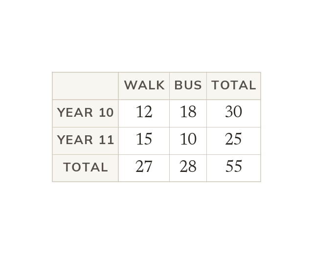

What the structure guarantees
Every member falls into exactly one inner cell. Each margin total is the sum of its own row or column.
A two-way table splits a group by one characteristic across its columns and another down its rows, so every member of the group falls into exactly one inner cell. The margins are what make the table more than a grid of numbers: each row total is the sum of that row's cells, each column total is the sum of that column's, and the grand total in the corner is reachable by adding either the row totals or the column totals. Those two routes to the same number are the table's own check on itself.